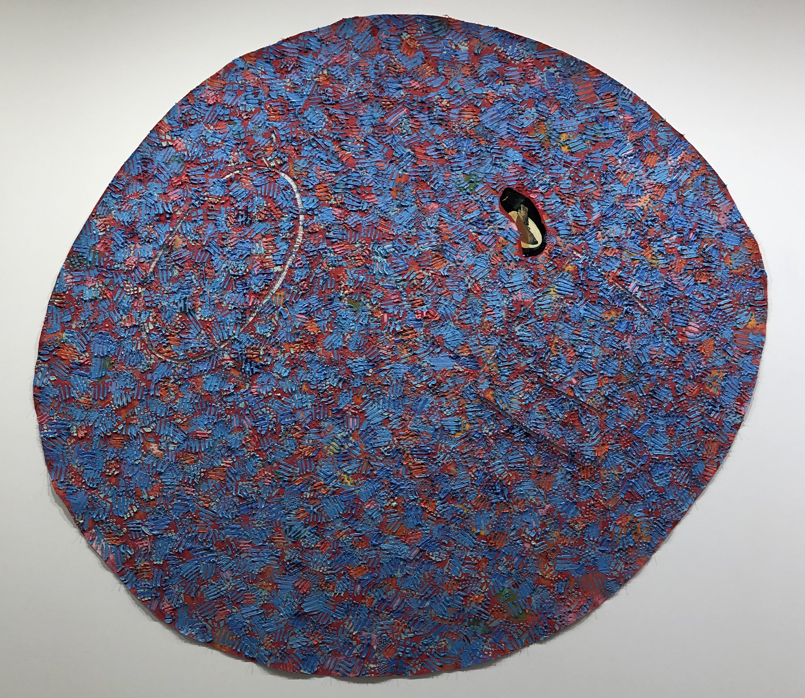

Autobiography: Africa (Red Frog II), 1986, Mixed media on canvas, 78 x 70 inches.
This collection of works, Autobiography, by Howardena Pindell have as many physical layers as they do emotional and conceptual. In the preface to these body of works he describes how he was in a car accident and the long standing effects and injuries the incident had on him. He suffered a bad concussion and had to work very hard to get memory function back. The accident left a large impact on him and influenced the idea to create work to remember important events in his life moving forward. He no longer wanted to take his memory for granted and wanted to value life moving forward. This piece is inspired by frogs he encountered in India but the piece is named Africa because they are also found on that continent. He recalls a night where he opens the door and sees thousands of eyes staring back at him. These were the frogs he is referencing in this painting. What fascinated him most about seeing them was how they disappeared during the day.
Pindell is clearly interested in camouflage and the concept of hiding. The color red has many meanings in India and is considered very special. This painting and texture reminds me of the stunning beauties we can find in nature especially frogs. There seems to be an almost window like opening in the piece which reminds me of memory. The layers convey multiple meanings and heavy-importance. The large scale of this piece is a perfect means to feel like standing before a forest as Pindell did with the frogs. There is most definitely a sense of something staring back at you.